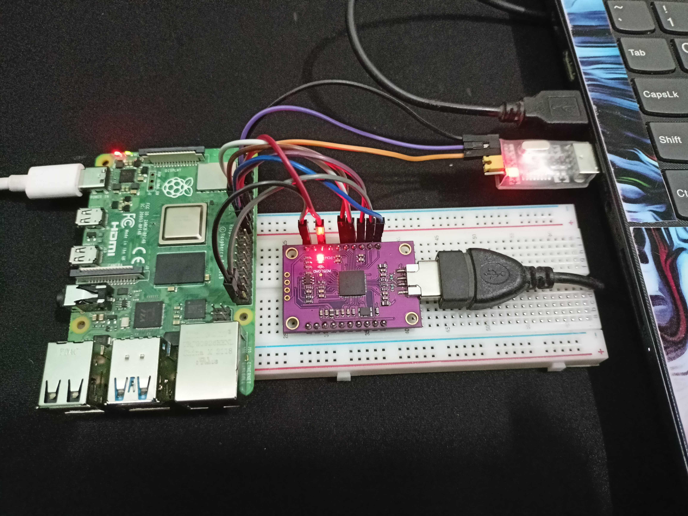
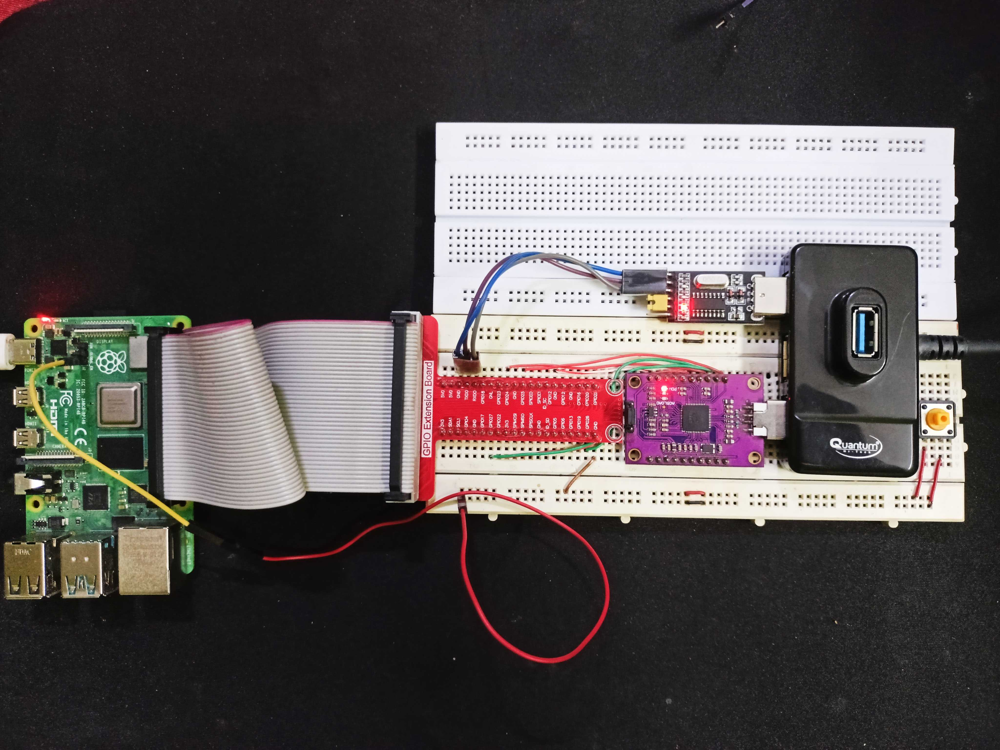

About
Welcome to my electronic schematics showcase! Here, you can explore various electronic schematics I've designed and learn more about their functionality. Some circuits have and osccilloscope output too. Click on the schematic images below to view them in detail.
FTDI + UART setup for JTAG debuggin

This is basic setup done on breadboard with wires

This is enchanced setup done on breadboard with T-cobbler